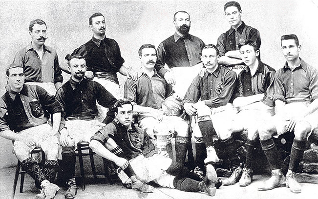
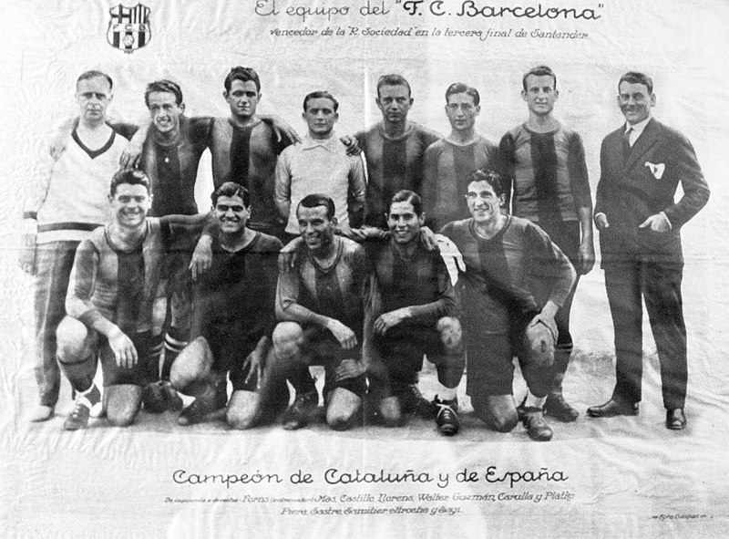
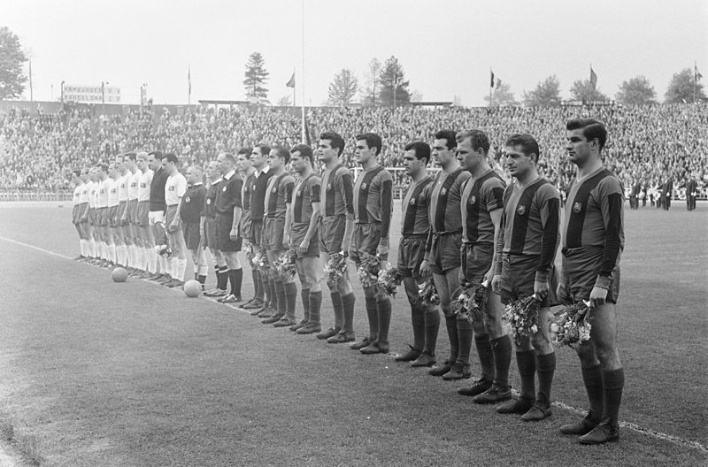
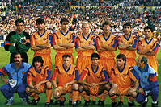
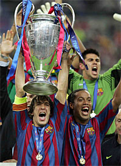

HISTORIA
El 29 de noviembre de 1899, Hans Gamper fundó el FC Barcelona, junto a once entusiastas practicantes de lo que en aquel momento era un desconocido deporte llamado foot-ball. Por aquel entonces, no podía ni imaginar la enorme magnitud que aquella iniciativa terminaría alcanzando con el paso del tiempo. A lo largo de sus más de cien años de vida, el Barça ha experimentado un crecimiento espectacular en todos los ámbitos y se ha convertido en algo más que una entidad deportiva, haciendo realidad el lema de el Barça es 'más que un club'. El Barça se ha convertido, para millones de personas de cualquier parte del mundo, en un símbolo de identidad no tan solo deportivo, sino también social, político y cultural. En los momentos más difíciles ha sido la bandera de Catalunya y ha representado los anhelos de libertad del pueblo catalán, una simbología que continúa fuertemente arraigada a la idiosincrasia del club y a la masa social. En el contexto español, el Barça se ve como un club abierto y democrático. Y en el resto del mundo, el Barça se identifica con causas solidarias, concretamente con la infancia, a través de su acuerdo de patrocinio con Unicef. Durante todo un siglo, el barcelonismo ha vivido momentos de gloria e infortunio, épocas brillantes y otras no tan exitosas, triunfos épicos e importantes derrotas. Y cada uno de estos instantes ha contribuido a definir la personalidad de un club que, por sus peculiares características, es único en el mundo. Una historia más que centenaria pasa necesariamente por etapas muy distintas, tanto bajo el punto de vista social como desde la óptica deportiva. Los primeros años (1899-1922) , desde la fundación hasta la construcción del estadio de Les Corts, el Barça fue un club de fútbol que tuvo que singularizarse respecto a los otros equipos barceloneses, hasta devenir en el club e referencia de la ciudad. El Barça se convirtió en el club líder en Catalunya, y además apostó por acercarse a una sensibilidad catalanista que iba ganando cada vez más fuerza.
De Les Corts al Camp Nou (1922-1957)
La entidad vivió situaciones contrapuestas. Por una parte, el crecimiento asociativo, que superó por primera vez los 10.000 socios, y la decidida orientación hacia el fútbol profesional y de masas, una etapa en la que destacaron jugadores como Alcántara y Samitier. Por otra, las dificultades materiales y políticas derivadas de la Guerra Civil española y la posguerra, pues el club tuvo que sobrevivir en un clima muy adverso, con el asesinato en 1936 del presidente Josep Sunyol, la persona que precisamente promulgó el lema 'deporte y ciudadanía'. Asimismo, la entidad sobrevivió e inició una recuperación social y deportiva que se materializó con la construcción del Camp Nou, bajo el decisivo influjo del jugador Ladislau Kubala.
De la construcción del Camp Nou al 75º aniversario (1957-1974)
El Barça vivió una etapa de mediocres resultados deportivos, pero de consolidación como entidad, con un constante crecimiento social y una lenta pero progresiva recuperación de sus señas de identidad, a pesar de las circunstancias adversas. Una sensación palpable que se concretó por primera vez en el lema 'El Barça, más que un club', pronunciado por el presidente Narcís de Carreras. La emprendedora junta presidida por Agustí Montal trajo a Barcelona un futbolista que ha marcado la historia del club: Johan Cruyff.
Del 75º aniversario a la primera Copa de Europa (1974-1992)

la vida del club quedó marcada por la llegada de la democracia a los clubes de fútbol, el inicio del largo mandato de Josep Lluís Núñez, la ampliación del Camp Nou con motivo del campeonato del mundo de 1982 y la conquista de la Recopa (1979) en Basilea, un gran éxito deportivo pero también social, con una ingente y ejemplar expedición barcelonista que mostró a toda Europa la fusión de las banderas azulgranas y catalanas. El retorno de Cruyff, esta vez como entrenador del llamado 'Dream Team' (1990-1994), tuvo su colofón en la conquista de la Copa de Europa en el estadio de Wembley (1992), con el célebre gol de Koeman.
La consagración en el mundo. De Wembley al Mundial de Clubes (1992-2009)
Marca la evolución más reciente del club, enmarcado entre cuatro hitos deportivos fundamentales, las tres copas de Europa y el Mundial de Clubes. Estos años están marcados por el fin de la etapa presidencial de Josep Lluís Núñez y la celebración del Centenario del club (1999), que mostró todo el potencial social de la entidad. Tras la presidencia de Joan Gaspart (2000-2003), las elecciones de junio de 2003 llevaron a la presidencia Joan Laporta, que ha iniciado una nueva etapa de crecimiento social, con 172.938 socios, y éxitos deportivos como las cuatro Ligas, las Champions League alcanzadas en París y Roma y el Mundial de Clubes.  A partir de la temporada 2008-09, con la llegada de Josep Guardiola al banquillo del primer equipo la plantilla cogió nuevas energías y logró en el año 2009 las Seis Copas en juego, un hito que ha quedado grabado para siempre en la memoria de todos los barcelonistas. Unos éxitos deportivos que han reforzado enormemente la proyección social y mediática del club. La temporada 2009/10, la segunda de Guardiola al frente del banquillo, culmina con la consecución del segundo título de Liga consecutivo, el vigésimo de la historia del club, y que será recordado como el de los "99 puntos" por tratarse de una puntuación de récord. La plantilla acabaría jugando en la competición de la regularidad hasta el último partido, ante el Valladolid, y celebraría el título el mismo día, ante la afición del Camp Nou. La grandeza del Futbol Club Barcelona se explica, entre muchos otros factores, por su impresionante palmarés, que le convierte en el equipo con más títulos del estado español y uno de los más laureados del mundo. Las vitrinas del museo barcelonista acogen todos los trofeos posibles, encabezados por las Copas de Europa conseguidas en las finales de Wembley (1992), París (2006) y Roma (2009) y el Mundial de Clubes de Abu Dhabi (2009). Aparte de este máximo galardón continental, el Barça se ha ganado un prestigio incuestionable en Europa siendo el único equipo del continente que ha estado presente de forma ininterrumpida en las competiciones europeas desde su creación en 1955. Entre los múltiples hitos conseguidos en Europa cabe destacar la condición de 'rey de la Recopa' que ostenta el equipo azulgrana con cuatro galardones. Además, los barcelonistas acumulan tres títulos correspondientes a la Copa de Ferias (luego Copa de la UEFA y actualmente Liga Europea) de los años 1958, 1960 y 1966. También se adjudicaron en 1971 este trofeo en propiedad en una final especial que enfrentaba al primer ganador de esta competición, el FC Barcelona, y el último vencedor, el Leeds United